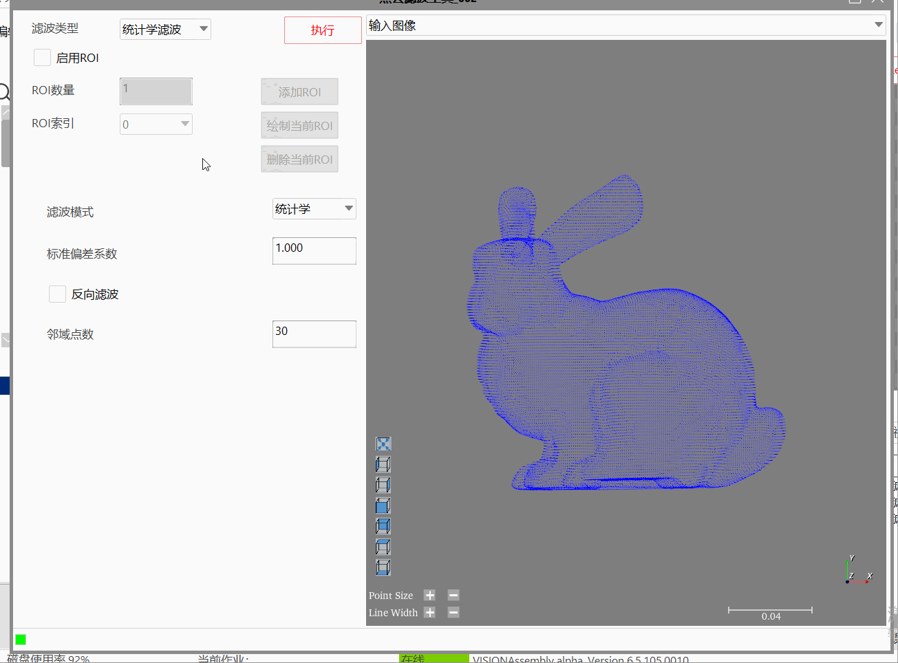
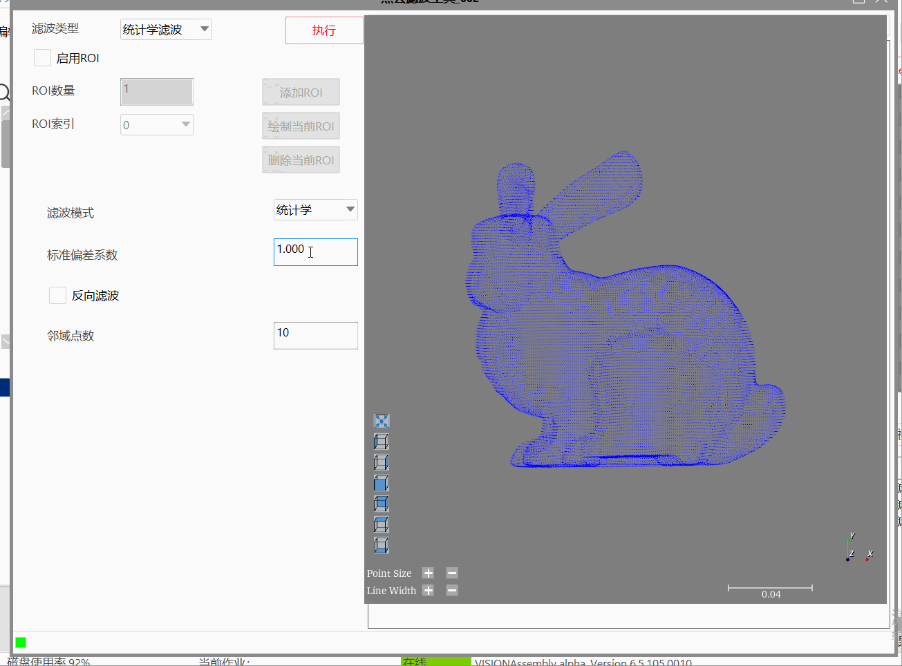
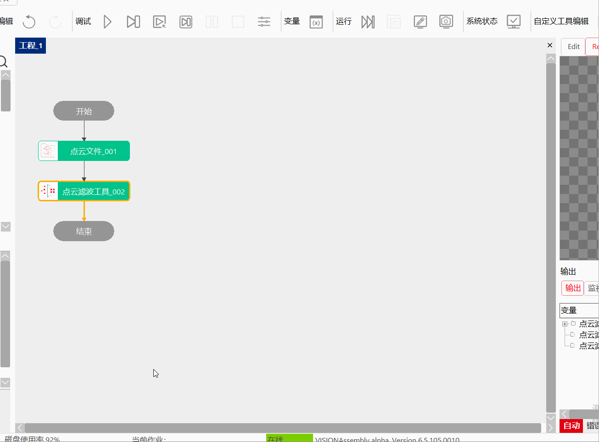
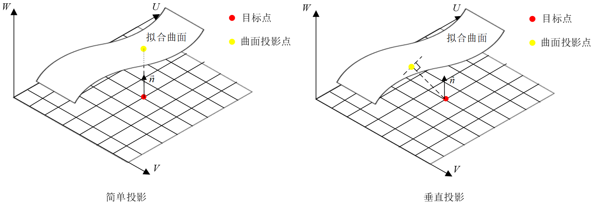
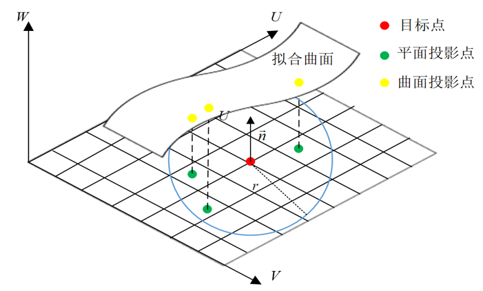
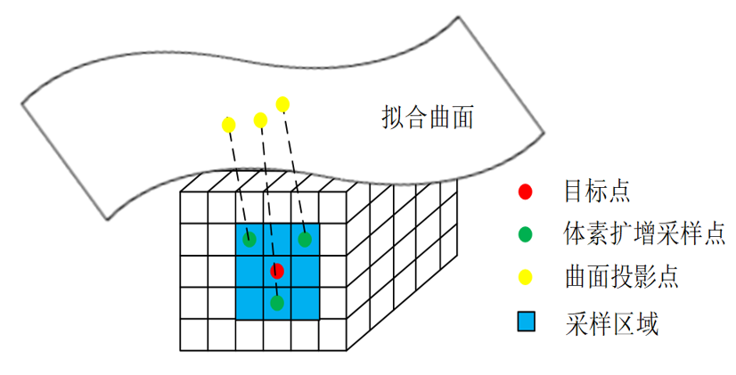

Công cụ lọc điểm mây chủ yếu phục vụ cho dự án đo lường điểm mây 3D, giải quyết các vấn đề khử nhiễu, làm mịn điểm mây, công cụ chủ yếu được ứng dụng trong giai đoạn tiền xử lý của dự án đo lường ba chiều.
Các kịch bản ứng dụng điển hình như: khi thu được dữ liệu điểm mây, do ảnh hưởng từ độ chính xác của thiết bị, kinh nghiệm của người vận hành, yếu tố môi trường, cũng như đặc tính nhiễu xạ của sóng điện từ（hiện tượng vật lý mà sóng điện từ lệch khỏi đường truyền thẳng ban đầu khi gặp vật cản）v.v., trong dữ liệu điểm mây sẽ không tránh khỏi xuất hiện một số điểm nhiễu; ngoài ra, trong ứng dụng thực tế ngoài các điểm nhiễu do sai số ngẫu nhiên tạo ra, do bị ảnh hưởng bởi nhiễu bên ngoài như tầm nhìn bị che khuất, vật cản v.v., trong dữ liệu điểm mây còn tồn tại một số điểm ngoại lai cách xa tập điểm chính. Công cụ lọc điểm mây có thể lọc hiệu quả các điểm nhiễu và điểm ngoại lai.
Bước 1: Thêm tệp điểm mây, công cụ lọc điểm mây, và nhấp đúp mở chuỗi tham số, liên kết tệp điểm mây, như hình 3-1 hiển thị;
Bước 2：Nhấp chuột phải vào công cụ lọc điểm mây chọn “Thuộc tính” để mở giao diện nâng cao của công cụ, như hình 3-2 hiển thị, loại lọc chọn “Lọc thống kê”, chế độ lọc chọn “Thống kê”; thiết lập tham số lọc, sau đó nhấp chạy để thu được dữ liệu điểm mây sau lọc thống kê;


Bước 1: Thêm tệp điểm mây, công cụ lọc điểm mây, và nhấp đúp mở chuỗi tham số, liên kết tệp điểm mây, như hình 3-1 hiển thị;
Bước 2：Nhấp chuột phải vào công cụ lọc điểm mây chọn “Thuộc tính” để mở giao diện nâng cao của công cụ, như hình 3-3 hiển thị, loại lọc chọn “Lọc thống kê”, chế độ lọc chọn “Voxel”; thiết lập tham số lọc, sau đó nhấp chạy để thu được dữ liệu điểm mây sau lọc voxel;

Bước 1: Thêm tệp điểm mây, công cụ lọc điểm mây, và nhấp đúp mở chuỗi tham số, liên kết tệp điểm mây, như hình 3-1 hiển thị;
Bước 2：Nhấp chuột phải vào công cụ lọc điểm mây chọn “Thuộc tính” để mở giao diện nâng cao của công cụ, như hình 3-4 hiển thị, loại lọc chọn “Lọc làm mịn”; thiết lập tham số lọc, sau đó nhấp chạy để thu được dữ liệu điểm mây sau lọc làm mịn;

| Tên tham số | Mô tả tham số |
|---|---|
| Dữ liệu điểm mây đầu vào | Liên kết hình ảnh điểm mây bên ngoài |
| Tên tham số | Mô tả tham số |
|---|---|
| Loại lọc điểm mây | Bao gồm: lọc thống kê và lọc làm mịn |
| Có bật ROI hay không | Chọn “Có”, thì sử dụng hộp chữ nhật chọn ROI để khớp; chọn “Không”, thì thực hiện khớp mặt phẳng trên toàn bộ điểm mây |
| Số lượng ROI | Trong trường hợp bật ROI, dùng để thiết lập số lượng ROI, phạm vi：[1,50] |
| Chỉ số ROI | Dùng để chuyển đổi giữa các chỉ số khác nhau |
| ROI hình hộp chữ nhật | ROI dưới chỉ số hiện tại |
| Chế độ lọc | Bao gồm: thống kê và voxel |
| Số điểm lân cận | Chỉ định số điểm lân cận của tìm kiếm KNN, tức chỉ định phạm vi tìm kiếm lân cận; phạm vi giá trị là (0,125] |
| Hệ số độ lệch chuẩn | Dùng để tự động xác định ngưỡng khoảng cách trung bình của điểm lân cận; phạm vi giá trị là [0.01,5] |
| Lọc ngược | Kết quả lấy ngược |
| Kích thước voxel X、Y、Z | Chỉ định kích thước lưới voxel đơn lẻ, từ đó chia toàn bộ điểm mây thành voxel; phạm vi giá trị là [0.001,1] |
| Thiết lập tự động | Tự động thiết lập ngưỡng số điểm lân cận |
| Ngưỡng số điểm lân cận | Chỉ định hoặc tự động xác định ngưỡng số điểm lân cận, nhỏ hơn ngưỡng thì là điểm nhiễu; phạm vi giá trị là (0,500] |
| Phương pháp tìm kiếm | Chỉ định phương pháp tìm kiếm lân cận là tìm kiếm lân cận KNN, tìm kiếm bán kính tương đối hoặc tìm kiếm bán kính tuyệt đối |
| Bán kính tìm kiếm tương đối/tuyệt đối | Chỉ định phạm vi tương đối của tìm kiếm bán kính, bán kính tìm kiếm bán kính tương đối là giá trị đầu vào nhân với độ phân giải điểm mây; phạm vi giá trị tương đối là [0.1, 10], phạm vi giá trị tuyệt đối [0.001,1] |
| Số điểm tìm kiếm lân cận | Chỉ định số điểm tìm kiếm lân cận của KNN; phạm vi giá trị là [3,150] |
| Thiết lập tham số nâng cao | Có: hiển thị tham số nâng cao, Không: không hiển thị tham số nâng cao |
| Phương pháp chiếu | Chỉ định phương pháp chiếu của từng điểm, bao gồm không chiếu, chiếu đơn giản và chiếu thẳng đứng |
| Phương pháp tính Sigma | Bao gồm Sigma mặc định, Sigma tuyệt đối và sigma tương đối; sigma mặc định là tự động xác định giá trị sigma tương ứng theo phương pháp tìm kiếm khác nhau; sigma tuyệt đối là giá trị đầu vào; sigma tương đối là giá trị đầu vào nhân với trung vị khoảng cách điểm lân cận. Sigma càng lớn, bề mặt khớp càng mịn; phạm vi giá trị là [0.001,1000] |
| Giá trị Sigma | Phạm vi giá trị là [0.001, 1000] |
| Bậc đa thức | Chỉ định bậc đa thức biểu thị bề mặt MLS, bậc càng cao, số điểm lân cận trên bề mặt khớp càng nhiều, bậc cao dễ quá khớp và hiệu suất chậm, tham số khuyến nghị là bậc hai, phạm vi giá trị là [1, 4] |
| Phương pháp lấy mẫu lên | Chỉ định phương pháp lấy mẫu lên của kết quả điểm mây, bao gồm không lấy mẫu, mặt phẳng cục bộ, phân bố đều và mở rộng voxel |
| Thiết lập bán kính lấy mẫu | Bao gồm bán kính lấy mẫu tuyệt đối và bán kính lấy mẫu tương đối |
| Bán kính lấy mẫu lên tương đối/tuyệt đối | Thiết lập cho phương pháp lấy mẫu lên trên mặt phẳng cục bộ, chỉ định kích thước mặt phẳng cục bộ của lấy mẫu lên. Nếu thiết lập giá trị tương đối, thì bán kính lấy mẫu lên là giá trị đầu vào nhân với độ phân giải điểm mây |
| Bước lấy mẫu lên tương đối/tuyệt đối | Thiết lập cho phương pháp lấy mẫu lên trên mặt phẳng cục bộ, chỉ định bước lấy mẫu lên. Nếu thiết lập giá trị tương đối, thì bước lấy mẫu lên là giá trị đầu vào nhân với độ phân giải điểm mây |
| Số điểm mong đợi | Thiết lập cho phương pháp lấy mẫu lên phân bố đều, chỉ định số điểm đạt được sau lấy mẫu lên trong phạm vi tìm kiếm bán kính nhất định; phạm vi giá trị là [1, 500] |
| Voxel MLS-X、Y、Z | Thiết lập cho phương pháp lấy mẫu lên mở rộng voxel, chỉ định kích thước voxel chia voxel điểm mây; phạm vi giá trị là [0.001, 1] |
| Số lần mở rộng voxel | Thiết lập cho phương pháp lấy mẫu lên mở rộng voxel, chỉ định số lần lấy mẫu lên mở rộng voxel; phạm vi giá trị là [0, 10] |
| Bật tính toán song song | Có bật tính toán song song hay không, chọn Có thì thuật toán sẽ bật cách tính toán song song OpenMp, có thể nâng cao tốc độ tính toán, nhưng có thể xuất hiện tình huống thời gian tiêu hao không ổn định, chọn Không thì thuật toán sẽ tắt tính toán song song OpenMp. |
| Tỷ lệ phần trăm số luồng | Thiết lập tỷ lệ phần trăm số luồng của tính toán song song, phạm vi hiệu quả là (0, 0.75], tương ứng với phạm vi phần trăm (0%, 75%]. |
Tham số giao diện nâng cao giống với tham số cửa sổ thuộc tính, các nút tương tác như sau:
| Tên nút | Mô tả tham số |
|---|---|
| Thêm ROI | Trong hình ảnh giao diện nâng cao, tự động thêm hộp chữ nhật ROI |
| Vẽ ROI hiện tại | Trong hình ảnh giao diện nâng cao, click và kéo chuột tại vị trí tương ứng để vẽ hộp chữ nhật ROI dưới chỉ số hiện tại |
| Xóa ROI hiện tại | Trong hình ảnh giao diện nâng cao, click và kéo chuột tại vị trí tương ứng để xóa hộp chữ nhật ROI dưới chỉ số hiện tại |
| Tên tham số | Mô tả tham số |
|---|---|
| Dữ liệu điểm mây đầu ra | Hiển thị hình ảnh điểm mây sau lọc |
| Tên tham số | Mô tả tham số |
|---|---|
| Dữ liệu điểm mây đầu ra | Hiển thị hình ảnh điểm mây sau lọc |
| Kết quả thực thi | Kết quả thực thi của công cụ |
| Thời gian thực thi | Thời gian thực thi của công cụ |
Tham khảo “\Samples\3D\Điểm mây\Đo điểm mây.gvp”。
Công cụ lọc điểm mây：Chủ yếu bao gồm chức năng lọc thống kê, lọc voxel và lọc làm mịn;
Nguyên lý thống kê：Áp dụng ý tưởng dựa trên thống kê, coi khoảng cách điểm trung bình của điểm mây như tuân theo phân bố chuẩn để lọc và khử nhiễu điểm mây đầu vào;
Nguyên lý lọc nhiễu voxel：Thông qua việc chia lưới voxel cho điểm mây nhiễu, dựa trên số điểm lân cận được chỉ định hoặc số điểm lân cận được tự động xác định bởi voxel lân cận có kích thước chỉ định để sàng lọc ra các điểm kết quả phù hợp với kỳ vọng;
Nguyên lý làm mịn bình phương nhỏ nhất di chuyển MLS：Thực hiện khớp bề mặt lân cận cục bộ cho điểm mây đầu vào, dựa trên bề mặt để sửa vị trí điểm và pháp tuyến;
Phương pháp chiếu：Chỉ định phương pháp chiếu của từng điểm, bao gồm không chiếu, chiếu đơn giản và chiếu thẳng đứng. Không chiếu: mỗi điểm được sửa mịn thành điểm chiếu trên mặt phẳng khớp cục bộ lân cận; chiếu đơn giản: mỗi điểm được sửa mịn thành điểm chiếu trên bề mặt khớp dọc theo hướng pháp tuyến; chiếu thẳng đứng: mỗi điểm được sửa mịn thành điểm chiếu trên bề mặt dọc theo hướng thẳng đứng với bề mặt khớp. Hiệu quả làm mịn của chiếu thẳng đứng tốt hơn chiếu đơn giản, hiệu suất của chiếu đơn giản tốt hơn chiếu thẳng đứng, như hình 7-1 hiển thị.

Phương pháp lấy mẫu lên：Chỉ định phương pháp lấy mẫu lên của kết quả điểm mây, bao gồm không lấy mẫu, mặt phẳng cục bộ, phân bố đều và mở rộng voxel.
Không lấy mẫu, điểm mây kết quả làm mịn không thực hiện lấy mẫu lên;
Mặt phẳng cục bộ, mỗi điểm của điểm mây kết quả làm mịn thực hiện lấy mẫu lên với bước chỉ định trong mặt phẳng cục bộ có kích thước chỉ định và lấy pháp tuyến làm pháp tuyến mặt phẳng, như hình 7-2 hiển thị;
Phân bố ngẫu nhiên đều, điểm mây kết quả làm mịn thực hiện lấy mẫu lên ngẫu nhiên trong phạm vi tìm kiếm bán kính nhất định;
Mở rộng voxel, thực hiện chia voxel cho điểm mây kết quả làm mịn, và xử lý hiệu lực hóa lưới 26 lân cận của từng điểm, dựa trên kích thước voxel để lấy mẫu lên cho lưới voxel được mở rộng, như hình 7-3 hiển thị.

